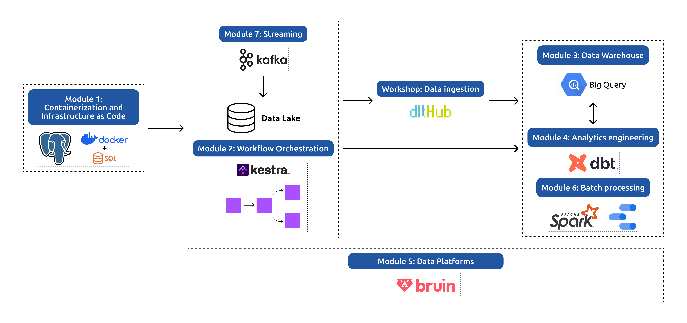
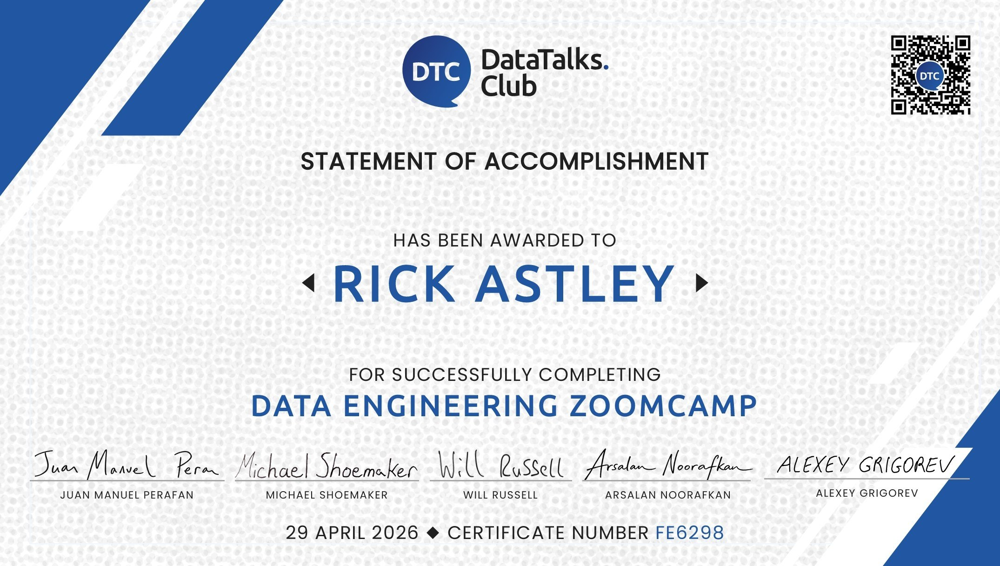

Data Engineering Zoomcamp: A Free 9-Week Course on Data Engineering Fundamentals
Master the fundamentals of data engineering by building an end-to-end data pipeline from scratch. Gain hands-on experience with industry-standard tools and best practices.

Join Slack • #course-data-engineering Channel • Telegram Announcements • Course Playlist • FAQ

Quick Links
| Resource | Link |
|---|---|
| Course materials | GitHub repository |
| Video lectures | YouTube playlist |
| Documentation | Zoomcamp Logistics · Data Engineering Zoomcamp |
| Course platform (deadlines, homework) | courses.datatalks.club |
| Slack channel | #course-data-engineering |
| Announcements | Telegram |
| FAQ | FAQ document |
About the Course
This free 9-week course teaches the fundamentals of data engineering by building an end-to-end data pipeline from scratch. It consists of structured modules, hands-on workshops, and a final project, giving you practical experience with industry-standard tools and best practices.
Who Should Join
This course is for developers, analysts, and data scientists who want to learn how to build data pipelines and work with the modern data engineering stack. No prior data engineering experience is necessary.
Prerequisites
To get the most out of this course, you should have:
- Basic coding experience
- Familiarity with SQL
- Experience with Python (helpful but not required)
No prior data engineering experience is necessary.
How to Take the Course
There are two ways to follow the course: live and self-paced.
| Live Cohort | Self-Paced | |
|---|---|---|
| Start | January 2027 | Anytime |
| Lectures | Pre-recorded | Pre-recorded |
| Homework | Graded | Available but not scored |
| Leaderboard | ✅ Yes | ❌ No |
| Peer Review | ✅ Yes | ❌ No |
| Certificate | ✅ Yes | ❌ No |
| Cost | Free | Free |
| Register | Sign up here | Just start learning! |
[!IMPORTANT] "Live cohort" does not mean live classes. All lectures are pre-recorded. "Live" means working alongside others with deadlines, scored homework, a leaderboard, peer review, and a certificate at the end.
Self-paced steps:
- Follow the materials on GitHub
- Ask questions and share progress in Slack
- Do the homework (self-checked) and build a project for your portfolio
Syllabus
Module 1: Containerization and Infrastructure as Code
- Introduction to GCP
- Docker and Docker Compose
- Running PostgreSQL with Docker
- Infrastructure setup with Terraform
- Homework
Module 2: Workflow Orchestration
- Data Lakes and Workflow Orchestration
- Workflow orchestration with Kestra
- Homework
Workshop 1: Data Ingestion
- API reading and pipeline scalability
- Data normalization and incremental loading
- Homework
Module 3: Data Warehousing
- Introduction to BigQuery
- Partitioning, clustering, and best practices
- Machine learning in BigQuery
Module 4: Analytics Engineering
- Analytics Engineering and Data Modeling
- dbt (data build tool) with DuckDB & BigQuery
- Testing, documentation, and deployment
Module 5: Data Platforms
- Building end-to-end data pipelines with Bruin
- Data ingestion, transformation, and quality
- Deployment to cloud (BigQuery)
Module 6: Batch Processing
- Introduction to Apache Spark
- DataFrames and SQL
- Internals of GroupBy and Joins
Module 7: Streaming
- Introduction to Kafka
- Kafka Streams and KSQL
- Schema management with Avro
Final Project
The final project applies all the concepts learned in a real-world scenario, including a peer review and feedback process.
Certificate

Certificates are awarded to learners who complete the final project during a live cohort. See Certification for how certification works and how to get your certificate.
Instructors
Past instructors:
Testimonials
Thank you for what you do! The Data Engineering Zoomcamp gave me skills that helped me land my first tech job.
— Tim Claytor (Source)
Three months might seem like a long time, but the growth and learning during this period are truly remarkable. It was a great experience with a lot of learning, connecting with like-minded people from all around the world, and having fun. I must admit, this was really hard. But the feeling of accomplishment and learning made it all worthwhile. And I would do it again!
— Nevenka Lukic (Source)
One of the significant things I inferred from the Zoomcamp is to prioritize fundamentals and principles over ever-evolving tools and tech stacks. Hugely grateful to Alexey Grigorev for putting together this incredible course and offering it for free.
Such a fun deep dive into data engineering, cloud automation, and orchestration. I learned so much along the way. Big shoutout to Alexey Grigorev and the DataTalksClub team for the opportunity and guidance throughout the 3 months of the free course.
— Assitan NIARE (Source)
If you're serious about breaking into data engineering, start here. The repo's structure, community, and hands-on focus make it unparalleled.
— Wady Osama (Source)
Community & Support
Getting Help on Slack
Join the #course-data-engineering channel on DataTalks.Club Slack for discussions, troubleshooting, and networking.
To keep discussions organized:
- Follow our guidelines when posting questions.
- Review the community guidelines.
Learning in Public
Share your progress as you go — see the learning in public guide.
Sponsors
A special thanks to our course sponsors for making this initiative possible!
Interested in supporting our community? Reach out to alexey@datatalks.club.
FAQ
A few common questions. For everything else, see the full Data Engineering Zoomcamp FAQ.
Q: Is this course really free?
A: Yes. All videos, materials, and homework are free and open-source.
Q: Do I need prior data engineering experience?
A: No. You just need basic coding experience and some familiarity with SQL. Python helps but isn't required.
Q: What does "live cohort" mean? Are there live classes?
A: No mandatory live classes. All lectures are pre-recorded. "Live" means deadlines, scored homework, a leaderboard, peer review, and certificate eligibility.
Q: Can I take it self-paced, and will I get a certificate?
A: Yes, you can start anytime. Certificates require completing the final project and peer reviews during a live cohort.
About DataTalks.Club
DataTalks.Club is a global online community of data enthusiasts. It's a place to discuss data, learn, share knowledge, ask and answer questions, and support each other.
Website • Join Slack Community • Newsletter • Upcoming Events • YouTube • GitHub • LinkedIn • X
All the activity at DataTalks.Club mainly happens on Slack. We post updates there and discuss different aspects of data, career questions, and more.
At DataTalks.Club, we organize online events, community activities, and free courses. You can learn more about what we do at DataTalks.Club docs.